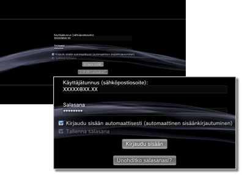

PlayStation™Network > Salasanan tallentaminen/automaattinen kirjautuminen
Salasanan tallentaminen/automaattinen kirjautuminen
Tämän toiminnon käyttäminen saattaa edellyttää, että käyttöjärjestelmä päivitetään.
Jos tallennat salasanan, se täytetään automaattisesti kirjautumisnäyttöön. Jos valitset lisäksi automaattisen kirjautumisen, PS3™-järjestelmä kirjautuu automaattisesti PSNSM-verkkoon, kun laitteeseen kytketään virta.
Huomautukset
- Salasanan tallentaminen saattaa antaa muille mahdollisuuden käyttää PSNSM-palveluitasi tai katsella muita tiliisi liittyviä tietoja.
- Muista tyhjentää PSNSMin kirjautumisnäytön [Tallenna salasana] -asetus kaikkien käyttäjien kohdalta, ennen kuin toimitat PS3™-järjestelmäsi valtuutettuun huoltoliikkeeseen. Tämä estää luottokorttisi ja muiden henkilökohtaisten tietojesi luvattoman käytön.
- Jos luovutat PS3™-järjestelmän jostakin syystä kolmannelle osapuolelle (tuotepalautus mukaan lukien), poista kaikki tiedot ja palauta PS3™-järjestelmän oletusasetukset. Tämä estää luottokorttisi ja muiden henkilökohtaisten tietojesi luvattoman käytön.
1. |
Valitse |
|---|---|
2. |
Kirjoita käyttäjätunnus (sähköpostiosoite) ja salasana. |
3. |
Valitse kohdat [Tallenna salasana] ja [Kirjaudu sisään automaattisesti (automaattinen sisäänkirjautuminen)].  |
Vihje
Jos asetus [Kirjaudu sisään automaattisesti (automaattinen sisäänkirjautuminen)] valitaan, (Kirjaudu sisään) -kuvake poistuu.
Automaattisen kirjautumisen asetuksen tyhjentäminen
Valitse  (Käyttäjätietojen hallinta) kohdasta
(Käyttäjätietojen hallinta) kohdasta  (PlayStation™Network) ja valitse sitten asetusvalikosta [Automaattinen sisäänkirjautuminen pois päältä]. Automaattinen kirjautuminen ei ole enää käytössä, kun käynnistät PS3™-järjestelmän seuraavan kerran.
(PlayStation™Network) ja valitse sitten asetusvalikosta [Automaattinen sisäänkirjautuminen pois päältä]. Automaattinen kirjautuminen ei ole enää käytössä, kun käynnistät PS3™-järjestelmän seuraavan kerran.
Salasanan tallennuksen poistaminen (salasanan tyhjentäminen)
1. |
Valitse |
|---|---|
2. |
Tyhjennä [Tallenna salasana] -valintaruutu näytössä, jossa annat käyttäjätunnuksesi ja salasanasi. |
Vihjeitä
- Jos automaattinen sisäänkirjautuminen on käytössä, (Kirjaudu sisään) -kuvaketta ei näytetä. Tällöin automaattinen sisäänkirjautuminen täytyy poistaa ensin käytöstä.
- Jos yhteys verkkoon katkeaa hetkeksi, automaattinen sisäänkirjautuminen kirjaa käyttäjän sisään yhteyden palattua, vaikka automaattinen sisäänkirjautuminen ei olisikaan käytössä.